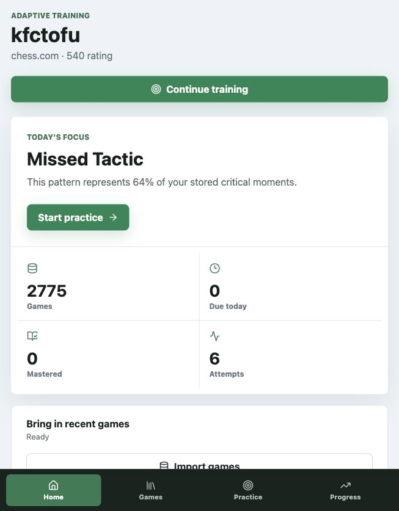
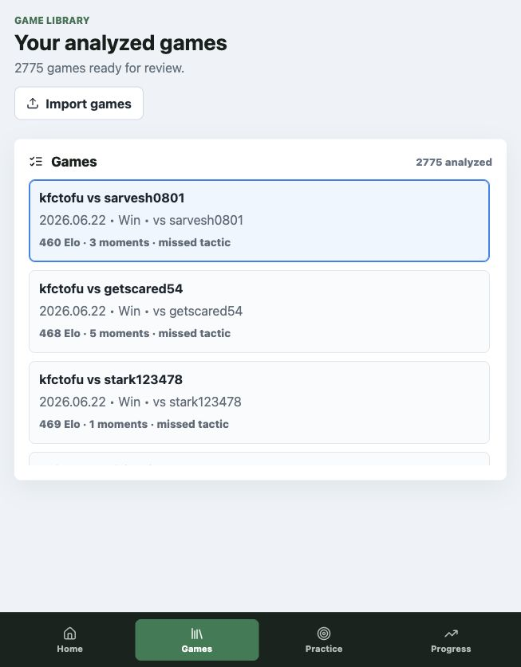
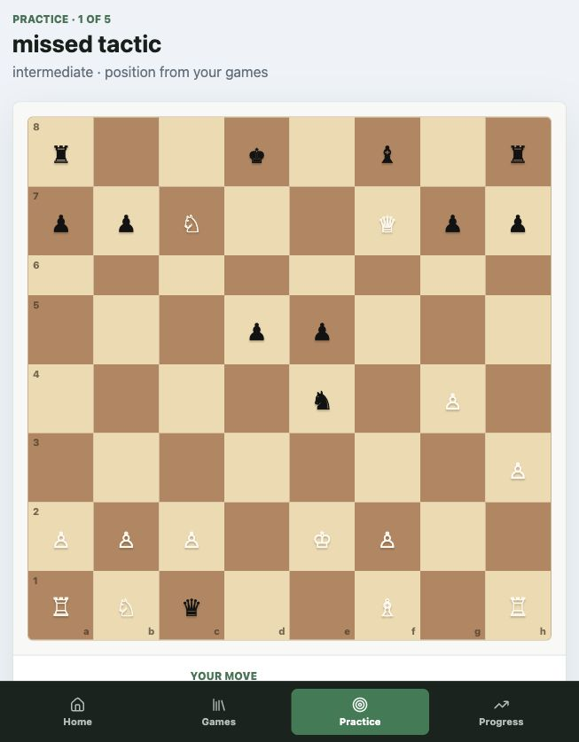

From 2,775 games to deliberate chess practice.
A grounded learning system that imports a player's full history, finds recurring weaknesses with Stockfish, turns real mistakes into board drills, grades attempts, and adapts review over time. This page maps every major part of the codebase to the techniques taught in the learn-agents course notes.
scripts/score_project.py116 files clustered into 14 semantic batches.
Scanned with Understand Anything (Egonex-AI). Phase 1 resolved imports across Python, TypeScript, docs, and infra. Phase 2 produced per-file summaries, function nodes, and cross-batch neighbor edges. Artifacts live in .understand-anything/intermediate/.
Frameworks detected
FastAPI, React, Vite, SQLAlchemy, Alembic, Pytest, Docker, GitHub Actions, Pydantic, Uvicorn
Louvain clustering
14 batches group tightly coupled modules: frontend shell, persistence/retrieval, API core, tests, deployment docs
Highest complexity
adaptive_api.py, router.tsx, repositories.py — orchestration and persistence boundaries
Batch map (import neighborhoods)
14 files. TanStack Router shell, pages, API client, workspace context.
router.tsxorchestrates games, review, practice, quality- Imports only
lib/api.ts+lib/types.tstoward backend
13 files. DB, repositories, retrieval, embeddings, memory, training, PydanticAI tools.
knowledge.py↔embeddings.pyllm.py↔coach_tools.py- Neighbors:
adaptive_api.py,analysis.py
9 files. FastAPI routes, sync worker, Stockfish analysis, importers, monitoring.
adaptive_api.pycallsrepositories,training,analysisanalysis.pycallsengine.py+knowledge.py
4 curated Markdown lessons (~500-token chunks) for retrieval benchmarks.
- tactical-vision, loose-pieces, king-safety, opening-principles
Architecture, evaluation, monitoring, moment selection, course mapping.
12 test modules (18 pytest cases), Alembic migrations, JSONL ground-truth datasets, scorer script neighbors.
Deterministic chess core, optional AI evaluation lane.
Learning loop
Persistent entities
Raw FENs and engine scores stay relational. Only curated lesson chunks use 384-d FastEmbed vectors in pgvector.
What each file does (Understand Anything summaries).
_process_sync_job fetches platform PGNs, skips already-analyzed external IDs, runs Stockfish analysis, and persists results.evaluate_attempt checks legality, compares pawn loss to best move, records attempts, and updates review schedule (1d wrong, 3d with hint, 7d clean, 30d mastered).production_strategy() picks BM25 unless hybrid clears explicit MRR and latency gates from the 20-query benchmark.CoachingOutput. Tools inspect games, positions, moments, compare moves, generate quizzes, and build training sessions. Used by test_tools.py and judge_evaluation.py, not the live practice UI.router.tsx and styles.css./ dashboard, /games library + sync, /games/:id review, /practice/:id drills, /progress trends, /quality monitoring. Legacy /coach redirects to practice.MonitoringDashboard.tsx at /quality.Three pipelines the product actually runs.
1. Full-history sync
POST /api/games/sync with platform, username, max games (up to 5,000).SyncJobRow; schedule _process_sync_job as BackgroundTask.preview_pgn_games normalizes metadata.GET /api/games/sync/{job_id}; refresh dashboard, library, practice queries.2. Practice session
POST /api/training/sessions — ranks moments by severity, theme accuracy, due date.build_training_session adapts move-choice count to player rating and theme performance.POST /api/training/sessions/{id}/attempts.evaluate_attempt validates legality, measures pawn loss vs best line, returns evaluation panel.QuizAttemptRow, ReviewScheduleRow, recomputes player memory.3. Moment detection (Lichess model)
Heuristics label a Stockfish-verified loss — they never invent a moment. A game can produce zero moments or twenty-five. See docs/moment_selection.md and Lichess analysis references.
Hanging or under-defended material
Missed checks, captures, threats
Exposure, open lines, castling
How each course lesson shows up in this repo.
Lesson paths are relative to ~/Documents/random-notes/learn-agents/. This table connects Buildcamp techniques to concrete artifacts discovered by Understand Anything and verified in tests.
| Course topic | Lesson reference | Project artifact | Evidence |
|---|---|---|---|
| RAG foundations | Week 1 → 04 - RAG (Retrieval-Augmented Generation).md 06 - Indexing data for search.md 07 - Chunking documents.md |
knowledge.py, ingest_knowledge.py, backend/data/knowledge/*.md |
Curated ~500-token lesson chunks; title, BM25, vector, hybrid strategies compared on 20 hand-authored queries. |
| Structured output | Week 1 → 05 - Structured Output Week 3 → 05 - Structured output with agents.md |
models.py → CoachingOutput, EvaluationPanel, QuizPanel |
Pydantic validates evidence, principle, drill, move, confidence fields before judge scoring. |
| Agentic RAG & tool loop | Week 3 → 02 - Agentic RAG and function calling.md 03 - The agentic tool-call loop.md |
llm.py tool registrations: search_chess_principles, inspect_critical_moments, inspect_position, build_training_drill |
test_tools.py uses PydanticAI TestModel to assert routing without network calls. |
| PydanticAI production agents | Week 3 → 05 - Pydantic AI production-ready agents.md 06 - Pydantic AI seeing tool calls.md |
llm.py:create_coach_agent, coach_tools.py (5 adaptive tools) + 4 evidence tools in llm.py |
Nine total tools documented in README.md. Offline evaluation only in shipped product. |
| Vector search bonus | Bonus → 07 - Vector Search with Qdrant.md | embeddings.py (FastEmbed BAAI/bge-small-en-v1.5), db_models.Vector384, pgvector |
Benchmarked but BM25 remains production default when hybrid misses latency/MRR gates. |
| Project structure | Week 4 → 03 - Project Structure | backend/src/chess_coach_agent/, frontend/src/, docs/, scripts/ |
UA Batch 3 (API core) separated from Batch 2 (persistence/AI) and Batch 1 (React). |
| Testing agents | Week 4 → 02 - First agent test.md 03 - Testing tool calls.md |
backend/tests/test_tools.py, test_api.py, test_adaptive_api.py |
12 test modules / 18 pytest cases in UA Batch 13; CI runs Pytest + Ruff + frontend build. |
| LLM judges | Week 4 → 02 - Creating an LLM judge.md 03 - Using the agent and coming up with test cases.md |
judge_evaluation.py, test_judge.py, critical_moments.jsonl |
MiniMax via OpenRouter scores theme, grounding, coaching quality; prompt tuned from 5.0→5.5/6. |
| Monitoring & Logfire | Week 5 → 02 - Logfire integration with PydanticAI.md 04 - Tracking user feedback.md |
monitoring.py, MonitoringDashboard.tsx, POST /api/feedback |
JSONL works without credentials; Logfire optional. Feedback exports to eval candidates. |
| Offline evaluation | Week 6 → 02 - Collecting evaluation data.md 04 - Evaluating AI responses.md |
retrieval_evaluation.py, evaluation.py, docs/evaluation_results.md |
Hand-crafted JSONL datasets; retrieval benchmark used to choose production strategy in code. |
| Capstone rubric | Week 7 → 03 - Evaluation criteria.md 04 - Documentation.md |
scripts/score_project.py and README.md |
Self-scorer checks all rubric items; Render deployment satisfies cloud bonus. |
| Deployment bonus | Bonus → 20 - Week 7 Deployment.md | render.yaml, Dockerfile, docker-compose.yml, GitHub Actions CI |
Single container serves FastAPI + built React + Stockfish; Postgres via Render blueprint. |
| OpenRouter alternative | Bonus → 01 - Week 1 OpenAI Alternatives.md | llm.py OpenRouter + MiniMax-M3 |
Deterministic fallbacks when OPENROUTER_API_KEY is absent; no public spend endpoints. |
POST /api/training/sessions runs the PydanticAI tool loop to rank stored moments and write quiz copy. Stockfish still grades every move.Quality is measured, not assumed.
Retrieval benchmark (20 queries)
| Strategy | Hit@3 | MRR | Median latency |
|---|---|---|---|
| Title-only | 0.35 | 0.35 | 0.084 ms |
| BM25 (production) | 0.95 | 0.858 | 0.124 ms |
| Vector | 0.95 | 0.725 | 0.338 ms |
| Hybrid RRF | 1.00 | 0.850 | 0.671 ms (too slow) |
Hybrid fails the coded latency guardrail (2× BM25). See retrieval_results.json.
Deterministic + judge layers
Loose pieces, king safety, opening drift, tactical collapses — test_analysis.py
test_tools.py asserts all nine tools and structured output shape.
Grounded format beats concise 3.0/6; opening-drift case improved 4→6/6.
Pytest, Ruff, TypeScript build, Postgres service container.
Understand Anything + manual tracing findings.
Resolved during review
No unauthenticated OpenRouter spend.
Deleted manual game-picker and preview import paths.
PydanticAI runs on session create with Logfire traces and agent scenario evaluation.
Next engineering work
GET /api/games/{platform}/{username} returns ~46 MB for 2,775 games today.
Durable SyncJobRow vs in-process BackgroundTasks mismatch.
Full history run ~16 min locally; reuse engines across games.
router.tsx, repositories.py, styles.css are UA complexity clusters.
Routes and screens.
| Route | Player question |
|---|---|
/ | What should I do next? |
/games | What is the evidence? Full-history sync + library. |
/games/:id | What happened here? Board, moments, train-this-position. |
/practice/:id | Can I solve it now? Graded board drill. |
/progress | Am I improving? Rating and theme trends. |
/quality | Does the system work? Monitoring dashboard. |
Design principle
Use AI to organize teaching experiments. Use chess evidence to decide what is true. Every drill comes from a real game, every answer can be graded, and every attempt changes what the player sees next.


